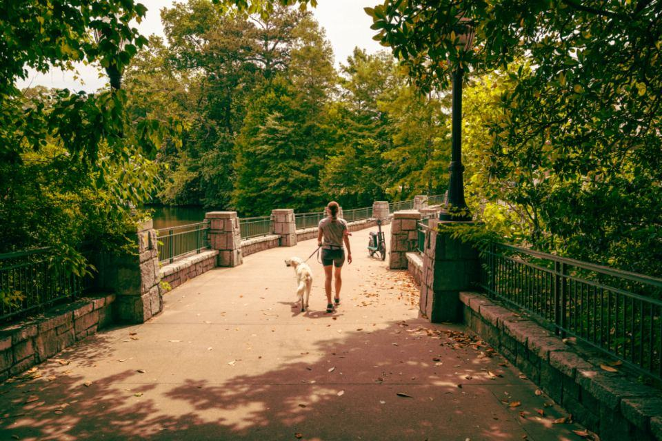
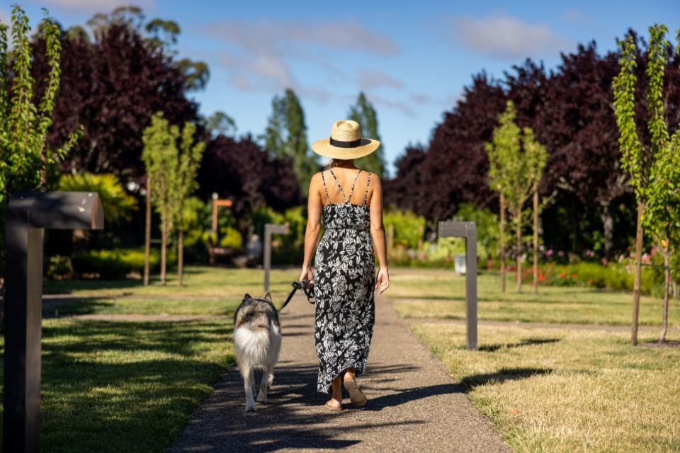

Behandlingar
Salongen ligger i ett gammalt garage på Södermalm och har bara ett bord. Vi tar en hund i taget, har inga andra hundar i lokalen och planerar varje besök efter hundens tidigare erfarenheter. Ibland blir första besöket bara att hunden äter godis på golvet och går hem igen.
Var befinner sig din hund idag?

Rädda och reaktiva hundar
Hundar som har bitits, har morrat, eller har nekats på andra salonger. Vi läser kroppsspråket och stannar innan hunden behöver höja rösten.
Munkorg används bara om hunden redan är tränad på den och tycker att den är okej.

Kooperativ hantering
Hunden lär sig att lägga hakan på en kudde när den är redo att bli hanterad. Lyfter den på huvudet, pausar vi.
Det låter långsamt, men efter några besök går det ofta snabbare än på en vanlig salong.

Omplaceringshundar
Hundar från omplacering och utlandsadoption har ofta okänd historia. Vi börjar från noll och skriver en plan tillsammans med ägaren.
Vi samarbetar med två veterinärer i Sundsvall och Timrå.

Valpar med försiktig start
Valpar som visar oro tidigt får korta, glada besök utan krav. Målet är att de aldrig ska bli rädda.
Valpbesök på 20 minuter, högst ett i veckan.
Fyra steg utan tvång
- 1

Samtal först
Vi pratar i femton minuter om hundens historia, triggers och vad som fungerat tidigare.
- 2

Bekantskap
Hunden får komma in, lukta och äta på golvet. Ibland är det hela första besöket.
- 3

Små steg
Vi arbetar i pass på några minuter och pausar så fort hunden visar stress.
- 4

Skriftlig plan
Efter besöket får du en plan med nästa steg och övningar att göra hemma.